苏轼 · 1080-1084
黄州
也无风雨也无晴
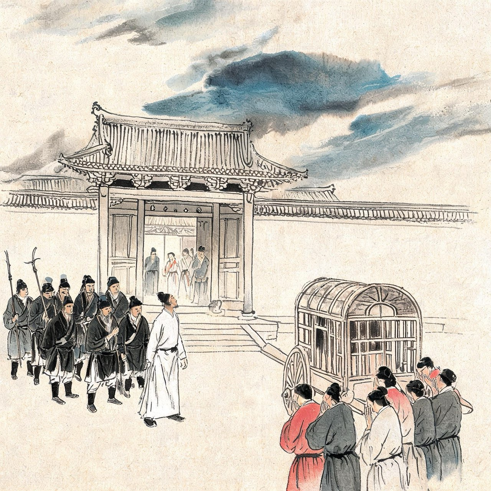
湖州被捕
元丰二年，你出任湖州知州。按惯例，到任要上谢表，你在表里写了几句感慨——就是这几句，被人一个字一个字地记了下来。
到任不过三个月，衙门里的椅子还没坐热。湖州的百姓喜欢你，你照旧察湖田、赈灾荒、写诗，像在杭州、密州、徐州时一样。
七月二十八日，御史台差人直入州衙，当堂宣读文书：弹劾你以诗文讥讪朝政，即刻押赴汴京问罪。顷刻之间，拉一太守，如驱犬鸡。
你甚至来不及交代什么。妻子儿女追出来哭，满街百姓落泪。你换上囚衣，登车上路。你没有回头。
你还不知道，这一走，会在牢里待上一百三十天；更不知道，你此生最好的文章，都将在这一劫之后写成。
注
- 顷刻之间，拉一太守，如驱犬鸡：出自孔平仲《孔氏谈苑》所记当日情形，后世乌台诗案叙述多转引之
- 弹劾者：何正臣、舒亶、李定等，摘引苏轼诗文劾其讥讽新法
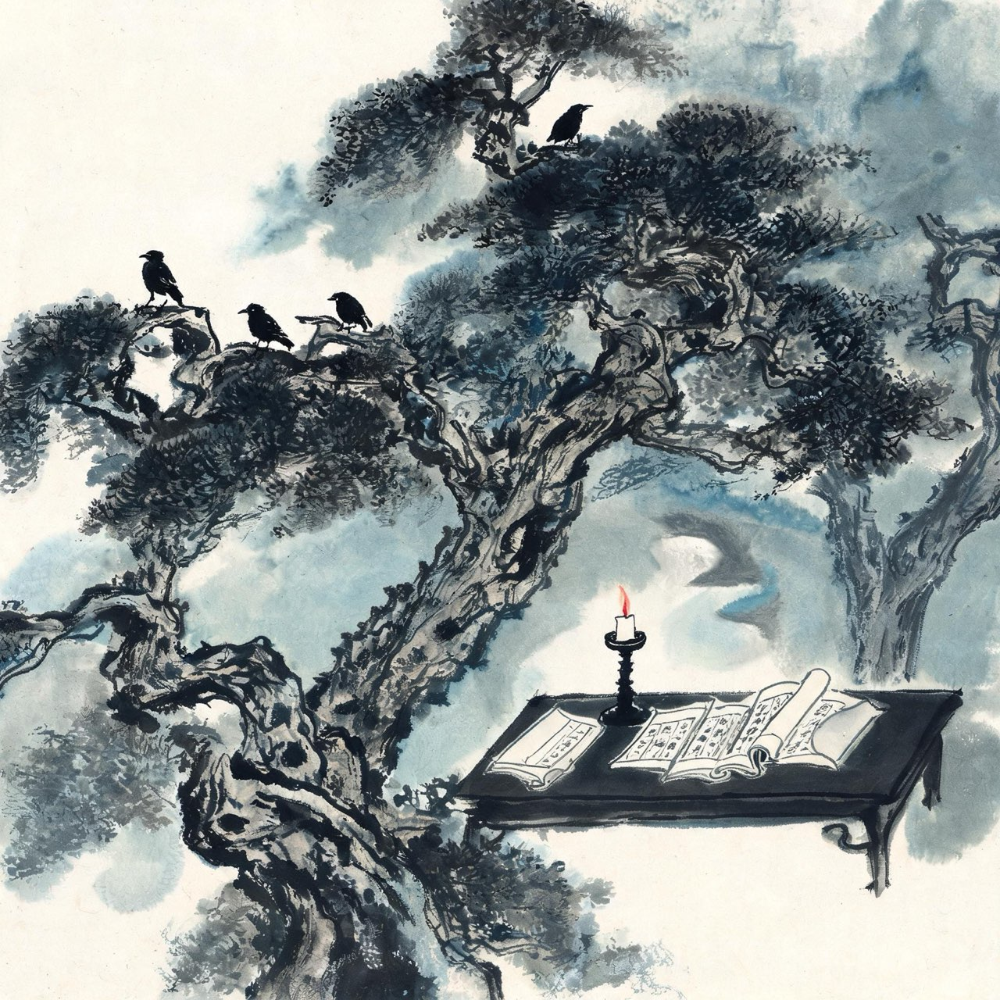
御史台罗织罪名
御史台的官员们把你的诗文摊开在案上，逐句摘录，逐条定罪。他们工作得极其认真——认真到把你的每一首诗都当成了供词。
你写桧树"根到九泉无曲处"，他们说这是暗中咒皇帝——地下无曲处，唯有蛰龙知。你写"东海若知明主意"，他们说这是反对朝廷兴修水利。你咏牡丹、写山水、与朋友唱和的玩笑，全都成了罪证。数百篇诗文，翻出数十处"罪证"，牵连友好二十余人：驸马王诜、弟弟苏辙、老友王巩……
他们要的不只是你的命，还要证明你们这一整个朋友圈子，都在讥讪朝政。
御史台自汉代遍植柏树，柏树上多乌鸦栖居，所以又称乌台。这桩案子，后世叫它：乌台诗案。
注
- 蛰龙之谤：王珪尝以双桧诗构陷，神宗答桧树与我何涉，事见宋人笔记，细节待校
- 牵连人物包括苏辙、王诜、王巩等
事件·乌台诗案
元丰二年（1079）七月案发，苏轼自湖州押解入京，系御史台狱一百三十天。这是北宋历史上第一桩因诗文而兴的大狱。
弟弟苏辙上书，愿以己官为兄赎罪；驸马王诜、老友王巩受牵连获罪；连已经退出政坛、退居金陵的王安石也上书言：安有圣世而杀才士乎。上至太皇太后，都有人为这个人说话。
十二月结案：贬黄州团练副使，本州安置，不得签书公事。死里逃生。
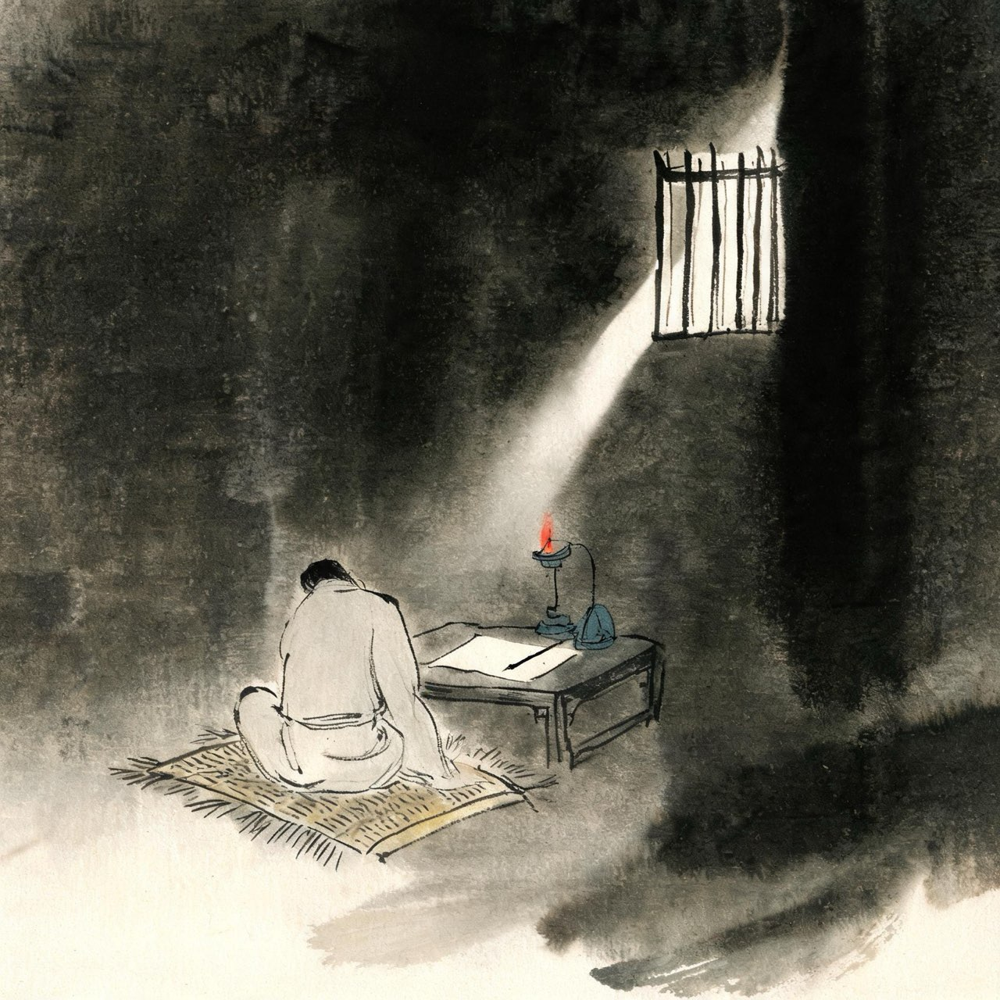
狱中一百三十天
黑暗里没有日期。墙很高，天只有一小块。你数着自己的心跳过夜，听隔壁囚犯的呓语，听柏树上乌鸦的叫声。
白天受审，夜里写交代材料——你的诗文、你的交游、你说过的每一句可能获罪的话，都要一条一条写清楚。狱卒梁成待你不薄；每夜查房，你佯装熟睡，其实睡不着。
长子苏迈每日送饭，你们约定：平日只送菜与肉，若听到死刑的消息，就送鱼。
某日，苏迈盘缠用尽，出京去借钱，托一位亲戚代送几日。亲戚不知这个约定，想着你在狱中清苦，特意送了一餐熏鱼。
你盯着那盘鱼，血一下子凉了。死期到了。
你在黑暗里坐了很久，然后摸出纸笔，给弟弟子由写下绝命诗。写完，交给梁成，求他代为保存。
注
- 送鱼诀别：轶事出自叶梦得《避暑录话》，细节属笔记家言，待校
- 系狱时长一百三十天，自元丰二年八月至十二月
狱中寄子由（其一，选段）
〔选原诗尾四句（是处青山至未了因）；全篇为七言律诗，前四句为：圣主如天万物春，小臣愚暗自亡身。百年未满先偿债，十口无归更累人〕
是处青山可埋骨，他年夜雨独伤神。
与君世世为兄弟，更结来生未了因。
注
- 夜雨对床：兄弟早年曾相约夜雨对床共宿，他年夜雨独伤神用此旧约
- 此诗狱卒不敢传，苏轼托付狱卒梁成藏于怀中，后得传
- 他年夜雨独伤神：一作他时夜雨，版本有异文
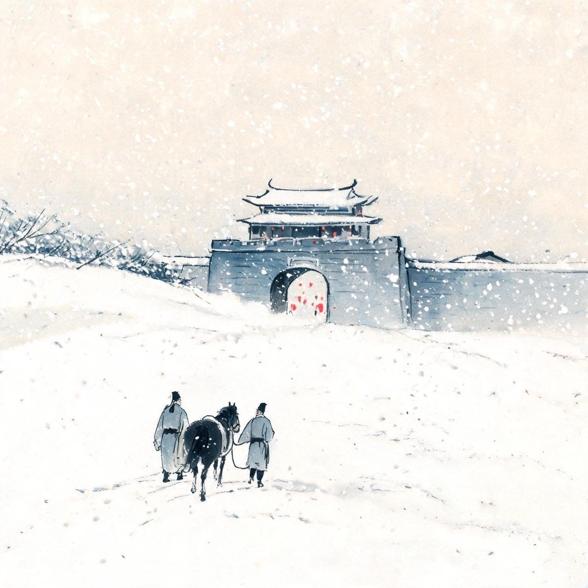
出狱即贬
十二月底，圣旨终于下来：免死。责授检校尚书水部员外郎、黄州团练副使，本州安置，不得签书公事。
这一串官名翻译过来就是：给你留个小官身，押到黄州看管起来，什么公务都不许碰。
出狱那天，你写了首诗，里面有两句：却对酒杯浑是梦，试拈诗笔已如神。写完自己摇头一笑，自嘲了一句：犹不改也——差点死在这支笔上，还是改不了要写。
元丰三年正月初一，汴京家家贴桃符放爆竹，你在贬途上。风雪里出汴京，只有长子苏迈跟着你。四十四岁的人，前半生的荣华、名声、朋友，都留在了身后。
这一路要走一个多月，只在陈州停下见了苏辙一面。兄弟俩都没敢想，下一次再见时彼此是什么光景。
注
- 犹不改也：出狱诗后自注习气不减，细节待校
- 途经陈州见苏辙，留数日；二月初一抵黄州
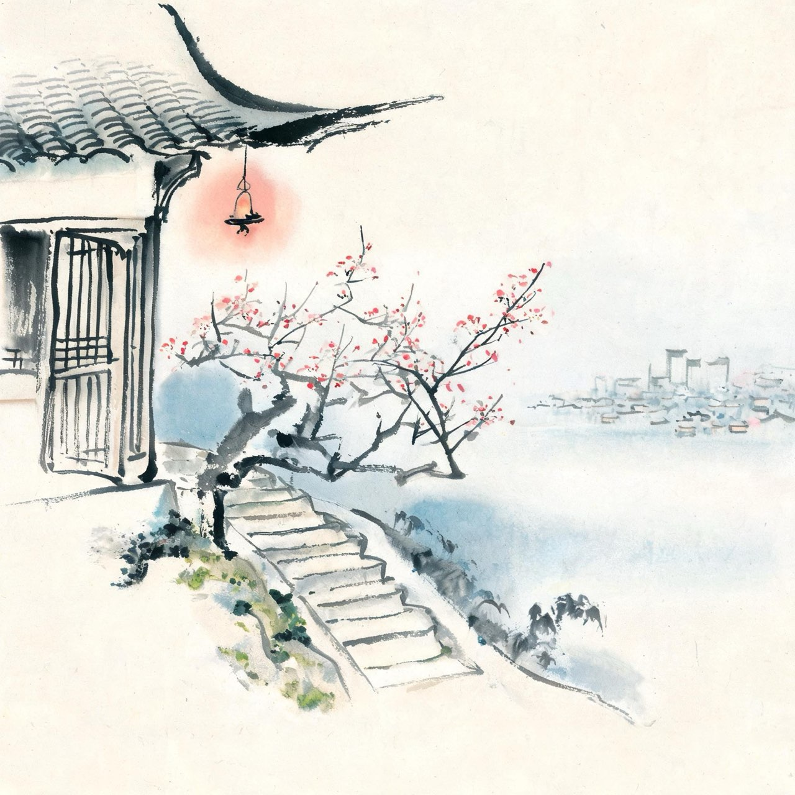
初到黄州
二月初一，你到黄州。长江边的小城，僻陋多雨，气象昏昏。太守把你安置住下，其余的，没人知道该怎么对待一个从死牢里放出来的名人。
没有官舍，你借住在城南定惠院里，跟着僧人吃斋饭。禅房很小，一床一桌，窗外有海棠一株。
白日你闭门不出。你是戴罪之身，是全天下读书人饭桌上的谈资——他们议论你的时候，大概不会想到你还活着，还听得见。
只有夜里，你才悄悄出门，一个人走到院外，看月亮。看很久。
平生亲友，没有一个字寄来。不是无情——是怕。这时候谁给你写信，谁就沾上你的罪名。
你后来给老朋友写信说：得罪以来，深自闭塞。写给谁？写给同遭乌台牵连的知交李端叔。难友懂难友。
注
- 平生亲友，无一字见及：语出《答李端叔书》
- 深自闭塞：语出《答李端叔书》
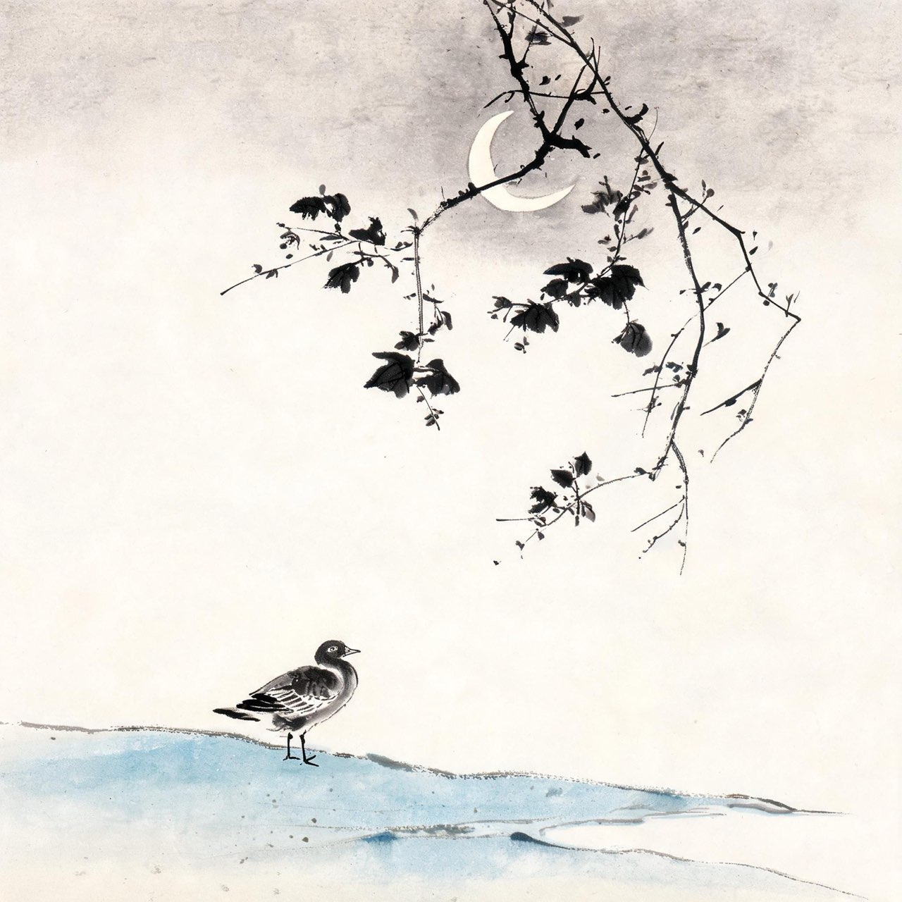
孤鸿
漏壶的水滴尽了，人声断绝，天地间只剩你一个醒着的人。
你推开禅房门，站在院子里。缺月挂在疏桐枝头，夜凉如水。
你看见一只孤鸿掠过——它惊起，回头，有恨，却无人懂得。它在云间飞，迟迟不肯落下。你忽然明白它在做什么：它把所有寒枝都拣过了，哪一根都不肯栖，宁可落在清冷的沙洲上，忍受寂寞。
那不是鸿，那是你。惊魂未定，不肯折腰，无枝可依。死过一次的人，不肯再委屈自己一次。
你回屋，点灯，把这一夜写成一阕词。四十几个字，字字都是你自己。
后来黄庭坚跋这阕词，说它语意高妙，像不食烟火人说的话。也有人惋叹：此词一出，其余咏雁之作皆可废。
注
- 黄庭坚跋此词谓语意高妙，非吃烟火食人道，细节待校
卜算子·黄州定慧院寓居作
缺月挂疏桐，漏断人初静。
谁见幽人独往来，缥缈孤鸿影。
惊起却回头，有恨无人省。
拣尽寒枝不肯栖，寂寞沙洲冷。
注
- 幽人：幽囚之人，兼指隐士；孤鸿与幽人互喻，是此词眼目
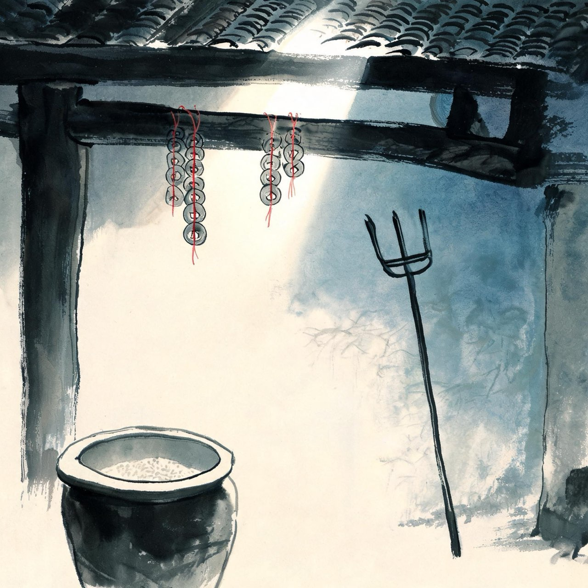
生计断绝
恐惧稍稍退去，更实际的问题浮上来：钱。
在汴京，你是翰林学士，俸禄、赐宴、往来馈赠，从不用为生计打算。在黄州，团练副使是个虚衔，俸禄形同虚设，说停就停。
你带着全家二十余口——续弦王闰之、三个儿子、家眷仆佣——全靠出京时的一点积蓄。坐吃山空，眼看着见底。
米缸一天浅过一天，孩子们的饭量一天大过一天。最疼的不是自己饿，是看着一家人跟着你受苦。
你决定痛自节俭。精打细算到什么程度？你给秦观的信里算了一笔账：每天开销不得超过一百五十钱。
事件·挂钱节用
这几乎是苏轼一生中最窘迫的家计方案，《答秦太虚书》里记得清清楚楚：每月初取四千五百钱，分作三十串，挂于屋梁；每日清晨用画叉挑下一串，随即把叉藏起来，防止自己多拿。用不完的钱，另贮大竹筒里，攒着留待招待客人。
一百五十钱一天，要喂饱二十多张嘴。
一代文豪的家底，悬在一根房梁上。
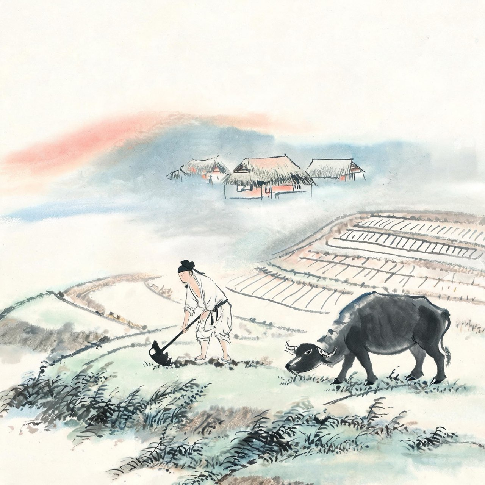
开垦东坡
故人马正卿看不下去了。这位与你相知多年的故人好友，替你向官府求来城东一块废弃的营地——数十亩荒地，荆棘丛生，瓦砾遍地，贫瘠得连灾年都懒得多看它一眼。
你脱下文人的袍子，买来牛和锄头。垦荒，烧草，捡石头，筑水坝、修稻田。本地老农过来指点你：哪里的土可以下种，水该往哪里引。你一一记下，像个老农一样。
垦了大半年，荒地有了样子。你种上稻子，又种枣树、桑树、栗树。手掌磨出水泡，水泡磨成茧。风吹日晒，你的脸黑了，腰反而直了。
你在坡上盖了几间草屋，大雪中落成，四壁绘上雪景，命名雪堂。你仰慕白居易在忠州东坡种花种树的故事，给自己取了个新号——
东坡居士。
从此天下人记住的是这个号，而不是那个差点被杀掉的苏轼。
注
- 东坡八首并叙自记求地垦荒始末：故人马正卿哀余乏食，为于郡中请故营地数十亩
- 自号东坡居士的系年有元丰四年、五年两说
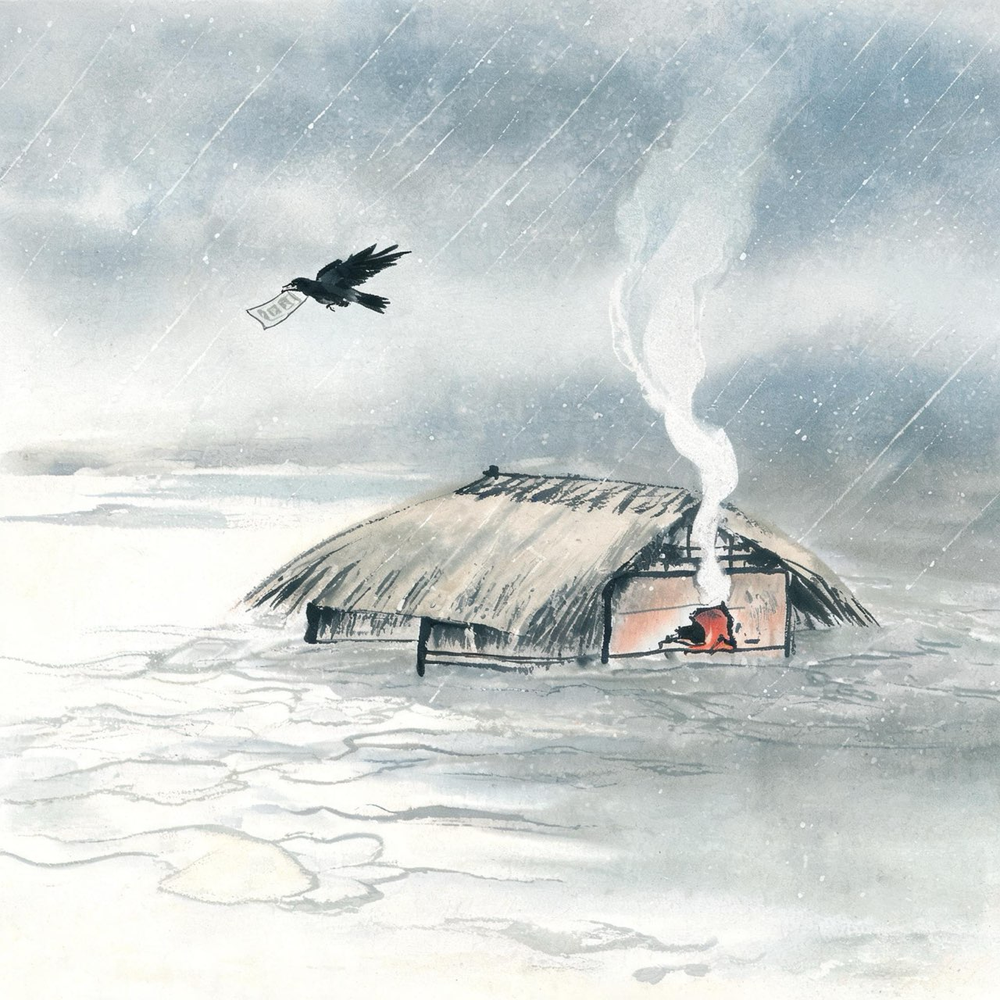
寒食苦雨
元丰五年，寒食。黄州的雨从春天一直没有停过，一下就是两个月。
开春以来你小病不断。江水漫上来，快要涌进屋门。小屋像一叶渔舟，泡在迷蒙的水汽里，随时要散架。
空空的厨房里煮着寒菜，破灶里烧着湿苇。湿柴不起火，满屋白烟，嚎得人流泪。
你已经忘了节令。直到抬头看见乌鸦衔着祭扫的纸钱掠过屋檐，才想起：哦，寒食到了。该扫墓了。
可是君门深九重，回不去了；祖坟在万里之外的眉山，拜不了了。进不能回朝，退不能归乡，你被钉在这片水汽里。
你想学阮籍，驾车走到穷途，大哭一场。可是心如死灰——吹，也吹不起来了。
这是你到黄州的第三年。垦了东坡，盖了雪堂，以为已经站稳了。一场寒食雨，把你打回原形。
寒食雨二首（其二）
春江欲入户，雨势来不已。
小屋如渔舟，濛濛水云里。
空庖煮寒菜，破灶烧湿苇。
那知是寒食，但见乌衔纸。
君门深九重，坟墓在万里。
也拟哭途穷，死灰吹不起。
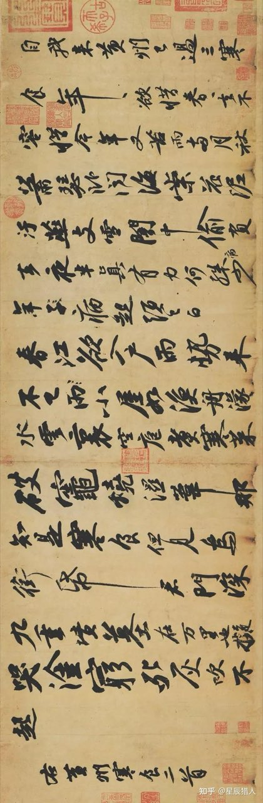
注
- 乌衔纸：寒食禁火，清明取新火；乌鸦衔纸钱掠过，方知节令已至
- 哭途穷：用阮籍驾车独行、途穷而哭之典
- 此二诗手稿即《黄州寒食帖》，天下第三行书，现藏台北故宫博物院
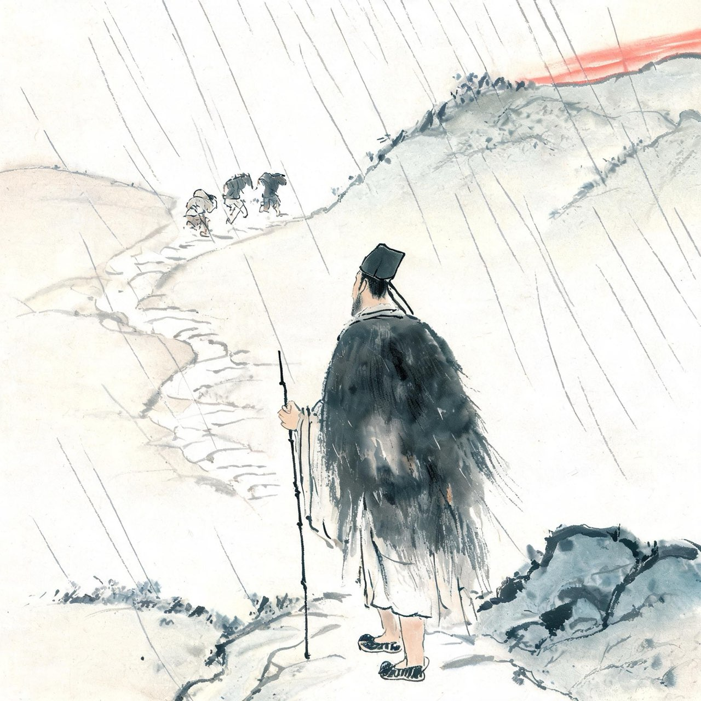
沙湖道中遇雨
三月七日，你去沙湖看田。听说那里有地可买——你想在黄州真正安一个家，不再借住僧舍，不再寄人篱下。
途中忽然下起雨，又急又密。雨具恰好先被仆人带走了。
同行的人都狼狈奔逃，找人家躲雨。只有你，不觉得。你就这样在雨里慢慢走，拄着竹杖，穿着草鞋，比骑马还轻快。别人跑，你走；别人狼狈，你吟诗，长啸。
淋成落汤鸡，居然走得像一场春游。
不一会儿，雨停了，天晴了。山头斜照迎面而来，晒在湿衣服上，暖烘烘的。
你站在春风里回头看刚才的来路：哪里有什么风雨，哪里又有什么晴天。
多年以后你会明白，真正把你从寒食的雨里救出来的，不是后来时来运转的任何一天，而是这一场雨。雨里你写下一阕词，其中八个字——一蓑烟雨任平生——足以支撑一个人度过余生任何一场风雨。
注
- 沙湖在黄州东南三十里，苏轼此行亦为求田，兼访名医庞安常
定风波·莫听穿林打叶声
三月七日，沙湖道中遇雨。雨具先去，同行皆狼狈，余独不觉。已而遂晴，故作此词。
莫听穿林打叶声，何妨吟啸且徐行。
竹杖芒鞋轻胜马，谁怕？一蓑烟雨任平生。
料峭春风吹酒醒，微冷，山头斜照却相迎。
回首向来萧瑟处，归去，也无风雨也无晴。
注
- 小序同行皆狼狈，余独不觉：全词的戏眼，豁达不是没淋雨，是淋了雨不觉得狼狈
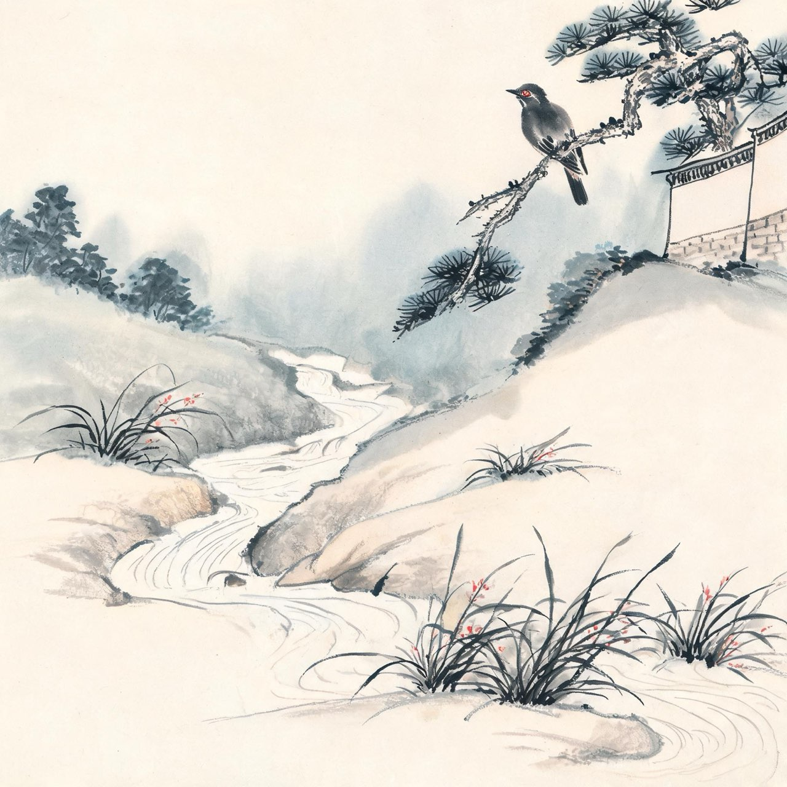
蕲水清泉寺
同一趟沙湖之行，你病了，左臂肿痛。听人说蕲水有个名医庞安常，医术通神，只是人是个聋子。
你去看他。他不能听，但一眼就能看穿你的意思。你们一个以手为口，一个以眼为耳，纸笔往来，倒也相谈甚欢。没几天，病就好了。
你开玩笑说：余以手为口，君以眼为耳，皆一时异人也。两个被命运亏待了某一部分的人，互为知音。
病好之后，他陪你同游清泉寺。寺门对着兰溪，水极清冽。你站在溪边看水，看了很久。
天下的溪水都向东流，百川到海，一去不回，就像人的年华，只去不来。可眼前这条兰溪，居然是向西流的。
水都能向西。谁说人生不能再少年？你大笑起来，笑自己前几日还满腹的死灰。
注
- 余以手为口，君以眼为耳：出自苏轼《游沙湖》原文
浣溪沙·游蕲水清泉寺
游蕲水清泉寺，寺临兰溪，溪水西流。
山下兰芽短浸溪，松间沙路净无泥，萧萧暮雨子规啼。
谁道人生无再少？门前流水尚能西！休将白发唱黄鸡。
注
- 休将白发唱黄鸡：反用白居易《醉歌》黄鸡催晓、白日催年之叹——白居易叹时光催人老，苏轼偏不肯认
- 子规即杜鹃，啼声如不如归去；暮雨子规而心境不衰颓，正是此词张力所在
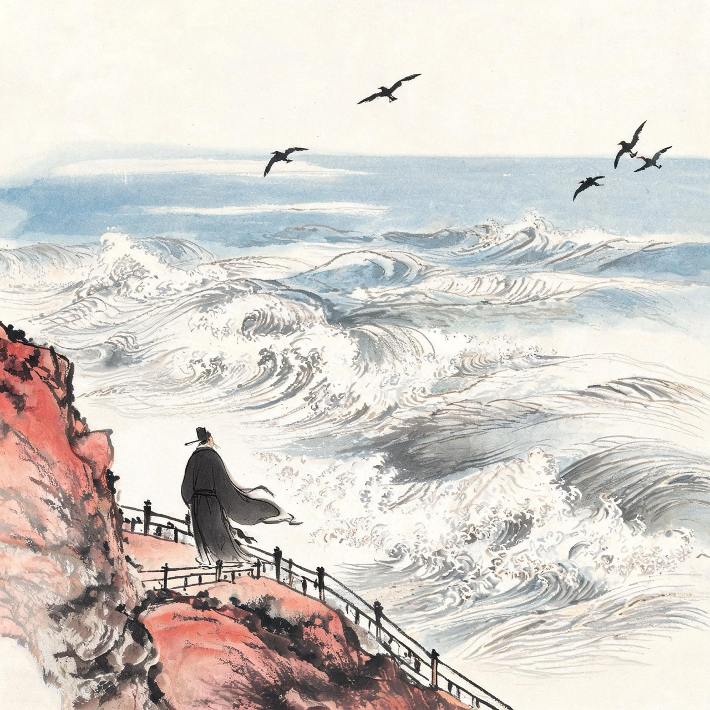
赤壁江上
七月，长江。黄州城外有一处赤壁矶，崖石赤红，下临大江，风急浪高。当地人传说，这就是三国时周瑜大破曹操八十万大军的地方。
你读过的书比你多——你心里清楚，此地未必是真正的古战场。所以你只写道：故垒西边，人道是，三国周郎赤壁。人道是三个字，是史家不肯含糊的诚实。
但那又有什么关系。
大江就在眼前。它从你被贬谪的这一年流过，从周郎谈笑破敌的那一年流过，从千古所有风流人物身上流过，谁也没能留住。浪淘尽三个字，把英雄和时间一起收进江水。
你想起周瑜。二十四岁建威中郎将，三十四岁火烧赤壁，娶的是江东最美的女子，一生意气，雄姿英发。
再想想自己。四十七岁，早生华发，功业未成，戴罪之身，困在这个江边小城。
换一个人，此刻该怨天怨地。你却笑了，多情应笑我——笑自己还在这儿较劲。你把一杯酒，洒进江月里。
注
- 人道是：苏轼明知黄州赤壁非蒲圻赤壁之战故地，措辞审慎，正是此处妙处
- 小乔初嫁：实为十年前事，初嫁是艺术压缩，用以衬托周瑜少年得意
念奴娇·赤壁怀古
大江东去，浪淘尽，千古风流人物。
故垒西边，人道是，三国周郎赤壁。
乱石穿空，惊涛拍岸，卷起千堆雪。
江山如画，一时多少豪杰。
遥想公瑾当年，小乔初嫁了，雄姿英发。
羽扇纶巾，谈笑间，樯橹灰飞烟灭。
故国神游，多情应笑我，早生华发。
人生如梦，一尊还酹江月。
注
- 樯橹一作强虏；人生如梦一作人间如梦，各版本有异文
- 酹：以酒洒地而祭。全词由千古收束于一杯酒、一轮月
扣舷而歌
七月既望，十五之后第一个月圆之夜。你与几位友人泛一叶小舟，游于赤壁之下。
清风徐来，水波不兴。你们举酒诵诗，放任小舟漂过茫茫万顷。江面浩渺，月光横贯，小舟像一片苇叶，你们像凌空飞升的仙人。
酒到半酣，有客人吹起洞箫。箫声呜呜咽咽，如怨如慕，如泣如诉，余音袭袭，能把深谷里的蛟龙舞起来，能让孤舟上的寡妇落泪。
你问他为什么吹得这么悲。他说出了你心底那个不敢细想的问题：
曹操当年舳艣千里，旌旗蔽空，如今在哪里？一世英雄都磨灭尽了，何况你我这样的人——蜉蝣寄于天地，粟米浮于沧海，哀吾生之须臾，羡长江之无穷。
你扣着船舷回答他。你从眼前的水与月说起：
江水日夜奔流，可江还是这条江；江月阴晴圆缺，可月亮还是这轮月亮。自其变者而观之，天地曾不能以一瞬；自其不变者而观之，则物与我皆无尽也。
那还有什么可羡慕的？江上的清风，山间的明月，耳朵听到就是声，眼睛看到就是色，取之无禁，用之不竭。这是造物者无尽藏，你我此刻共享。
客人笑了，洗干净杯子重新斟酒。主客在舟中睡去，不知东方之既白。
注
- 吹箫客人一般认为是绵竹道士杨世昌，善吹洞箫，苏轼《次韵孔毅父》诗自注可证
- 七月既望：农历十六日
前赤壁赋（选段）
〔选赋第四段两句，即江月之答；全文另有苏子与客对话框架〕
逝者如斯，而未尝往也；盈虚者如彼，而卒莫消长也。
盖将自其变者而观之，则天地曾不能以一瞬；自其不变者而观之，则物与我皆无尽也，而又何羡乎！
注
- 此段为全赋哲思核心：以水与月为喻，答客之哀，亦自答乌台诗案以来全部的恐惧与不甘
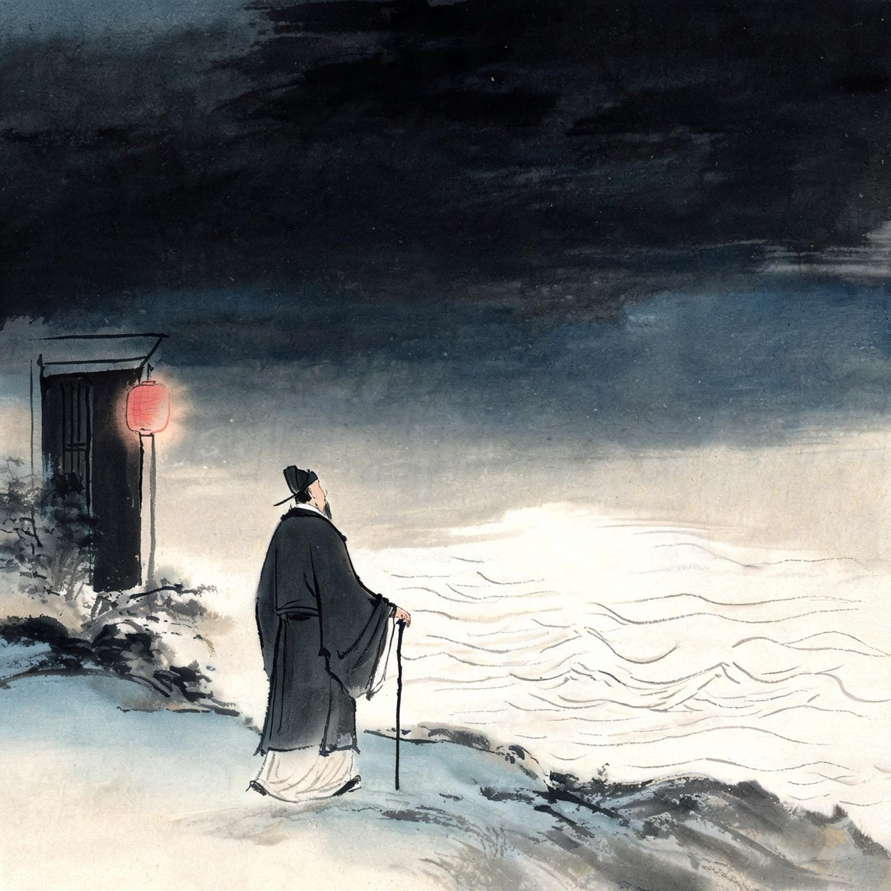
东坡夜饮
深秋的夜晚，你在东坡雪堂与朋友饮酒。一壶接一壶，醒了又醉，醉了又醒。
散席时已是深夜。从雪堂回临皋亭，要走一段田埂小路。月亮照着，你深一脚浅一脚，哼着歌。
到家门口，三更了。敲门——没有声音。再敲，里面传来家童的鼾声，雷一样，天王老子也叫不醒。
换作从前在汴京，宅子里仆役成群，几时需要自己敲门？现在你没有恼。索性不敲了。你拄着手杖，转身走到江边，听江水。
夜深了，风停了，江面的细浪平得像绉纱。你心里忽然涌上来一句话：长恨此身非我有，何时忘却营营。
这身躯，是官家的、案牍的、毁谤的，几时真正属于过自己？真想乘一叶小舟，从此逝去，江海寄余生。
你想完，站了一会儿，回屋倒头就睡。
注
- 系年从《苏轼词编年笺注》元丰五年秋说，另有元丰六年说
- 临皋亭：苏轼自定惠院迁居于此，在长江边
临江仙·夜饮东坡醒复醉
夜饮东坡醒复醉，归来仿佛三更。
家童鼻息已雷鸣。敲门都不应，倚杖听江声。
长恨此身非我有，何时忘却营营。
夜阑风静縠纹平。小舟从此逝，江海寄余生。
注
- 此身非我有：化用庄子身非汝有，是天地之委形
- 縠纹：绉纱般的水纹
事件·太守的虚惊
这阕词闹出了一场虚惊。
第二天，满城喧传：苏轼昨夜写下此词，挂官服于江边，拏舟长啸而去——罪人连夜逃跑了！
黄州太守徐君猷又惊又惧。苏轼名义上是他辖下安置的罪人，人跑了，他头上的乌纱保不住。急忙命驾，亲往临皋亭查看。
到了一看：苏轼在床上，鼾声如雷，还没睡醒。
一场"夜遁"，不过是醉汉的狂想和一夜好眠。太守哭笑不得，虚惊收场。而"小舟从此逝"七个字，倒是真的传唱开了。
注
- 此则轶事出自叶梦得《避暑录话》，宋人笔记，细节待考
五年回望
元丰七年，量移汝州的诏书到了。汝州离汴京近，这是起复的信号。离开黄州前，你回望这五年：
一个死里逃生的囚徒，在这里躬耕东坡，筑雪堂，自号东坡居士；写了《赤壁赋》前后两篇、一阕《念奴娇》，写了两首寒食诗，后来成为天下第三行书。此后世人再谈文章，绕不开黄州。
临行前，黄州的父老乡亲带着酒菜到江边送你。你在这里欠下的、收获的，都不是一句谢字能说完的。
黄州没有饶过你：把你从云端踹进泥里。你也没有辜负黄州：从泥里站起来，长成了东坡。
注
- 量移：被贬之人酌情内迁近地，非平反
- 二赋一词：前后赤壁赋与念奴娇·赤壁怀古的合称
现在，再读一遍。
定风波·莫听穿林打叶声（再读一遍）
三月七日，沙湖道中遇雨。雨具先去，同行皆狼狈，余独不觉。已而遂晴，故作此词。
莫听穿林打叶声，何妨吟啸且徐行。
竹杖芒鞋轻胜马，谁怕？一蓑烟雨任平生。
料峭春风吹酒醒，微冷，山头斜照却相迎。
回首向来萧瑟处，归去，也无风雨也无晴。
注
- 重读本章沙湖道中遇雨一首，前后两处互见